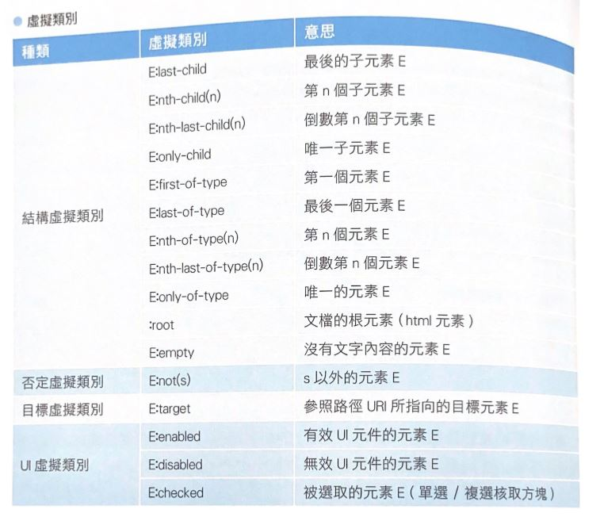

Display
- block
- inline
- inline-block
- table-cell
- none
具width/height 概念，可設padding/margin，元素由上至下
不具width/height 概念，不可設margin，可設vertical-align，元素同一列顯示
具width/height 概念，可設padding/marginn，元素同一列顯示，可利用父元素text_align，會有一點空格
Position
- static
- absoulte
- relative
- fixed
- sticky
預設值
絕對定位: 以有座標/relative的父元素為基準(沒有就一直往上找)，利用top/right/left/buttom:數值 定位
相對定位: 已原本顯示位置為基準來移動。主要用來幫absoulte當基準 或 希望區塊重疊時使用
固定配置: 拉卷軸滾動他都在同一個位置
黏住: 滾到某個位置就黏住不往下動了
Flexbox
container : display: flex;、align-items(直向位置):、justify-content(橫向位置)、flex-wrap
item1
flex-basis(看主軸row-or-column)
item3
p.s. align-content決定行之間的間隔，而align-items決定元素整體在容器的什麼位置。只有一行的時候align-content沒有任何效果。
Pseudo-elements/class
用來選定想要操作的元素
- :nth-child(n)的n 可以設定為even/odd/算式(ex. 3n+2 >>(3*0+2、3*1+2、3*3+2...))
- "~child"與"~of-type"的差異： C為流水號會一直編號下去、T為先劃分類型，再從1編號